workflow tutorial
example.Rmd
library(seatrackRgls)
knitr::opts_chunk$set(
collapse = TRUE,
comment = "#>"
)Prepare basic metadata for calibration. Basic metadata must have
logger_id, logger_model, species,
colony, date_deployed,
date_retrieved columns. It is expected to be one row per
logger/retrieval year combination.
print(example_metadata)
#> logger_id logger_model date_deployed date_retrieved colony
#> 1 C411 mk4083 2015-06-11 2017-06-11 Sklinna
#> species
#> 1 Black-legged kittiwakePrepare colony information. Colony information must have
colony, col_lat, col_lon
columns.
print(example_colony_info)
#> colony col_lat col_lon
#> 1 Sklinna 65.202 10.995Set your import directory, where your light data is placed. Light
data is expected to be in the format
<logger_id>_<year_retrieved>_<logger_model>,
e.g. C411_2017_mk4083
import_dir <- "light_data"
print(list.files(import_dir))
#> [1] "C411_2017_mk4083.lig"Also set up an export directory, where all outputs will be saved.
export_dir <- "processed_light_data"With all this loaded, you can now carry out the first step which is to calibrate your data. To assist in this, there is an initial round of processing that generates helpful plots to choose calibration values
prepare_calibration(
import_directory = import_dir,
metadata = example_metadata,
all_colony_info = example_colony_info,
output_dir = export_dir
)You will find the calibration plots in the sun_calib
folder created on your output_dir.
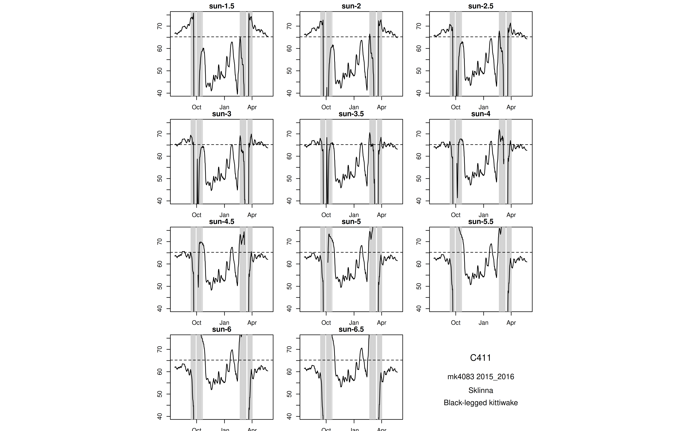
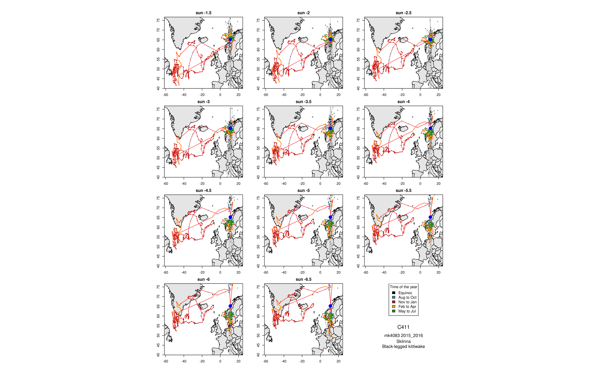
Stare at these plots. Use the force.
By default, this code will also have generated an excel file in the
calibration folder. You can use this to enter your
calibration values.

You must fill in at least the sun_angle_start column. It is also reccomended to include your name in the analyzer column.
Once you have filled in your calibration template, you can use these values to process the light data and export positions.
We can pass a path to the calibration data file:
calibration_data_path <- file.path(export_dir, "calibration", "calibration.xlsx")At this stage, we might want to include some extra relevant information in the final data output.
print(example_extra_metadata)
#> logger_id date_retrieved logger_producer ring_number country_code
#> 1 C411 2017-06-11 Biotrack 6211704 NOSThe final positions are now exported to your
output_dir.
head(positions)
#> logger_id logger_id_year total_years_tracked logger_model start_datetime
#> 1 C411 C411_2017 2015_2017 mk4083 2015-06-12
#> 2 C411 C411_2017 2015_2017 mk4083 2015-06-12
#> 3 C411 C411_2017 2015_2017 mk4083 2015-06-12
#> 4 C411 C411_2017 2015_2017 mk4083 2015-06-12
#> 5 C411 C411_2017 2015_2017 mk4083 2015-06-12
#> 6 C411 C411_2017 2015_2017 mk4083 2015-06-12
#> end_datetime year_tracked species
#> 1 2016-05-31 23:59:59 2015_2016 Black-legged kittiwake
#> 2 2016-05-31 23:59:59 2015_2016 Black-legged kittiwake
#> 3 2016-05-31 23:59:59 2015_2016 Black-legged kittiwake
#> 4 2016-05-31 23:59:59 2015_2016 Black-legged kittiwake
#> 5 2016-05-31 23:59:59 2015_2016 Black-legged kittiwake
#> 6 2016-05-31 23:59:59 2015_2016 Black-legged kittiwake
#> date_time sun_angle eqfilter lon_raw lat_raw lon_smooth1
#> 1 2015-07-25 11:30:42.75 -3.5 TRUE 8.954225 64.47571 11.027464
#> 2 2015-07-25 23:26:25.076923 -3.5 TRUE 10.029073 64.79553 9.491649
#> 3 2015-07-27 11:43:40.404762 -3.5 TRUE 5.714256 61.37273 5.519647
#> 4 2015-07-27 23:37:34.833333 -3.5 TRUE 7.236153 62.03278 6.475204
#> 5 2015-07-28 11:47:04.884615 -3.5 TRUE 4.858584 62.92117 6.047368
#> 6 2015-07-28 23:29:10.384615 -3.5 TRUE 9.333166 64.25771 7.095875
#> lat_smooth1 lon lat tFirst
#> 1 63.96438 10.268904 64.30201 2015-07-25 01:14:48.5
#> 2 64.63562 10.928250 64.51050 2015-07-25 21:46:37
#> 3 61.37530 5.994907 61.53986 2015-07-27 02:21:00.142857
#> 4 61.70276 6.264015 62.09003 2015-07-27 21:06:20.666667
#> 5 62.47698 6.561618 63.03418 2015-07-28 02:08:49
#> 6 63.58944 8.978497 63.76684 2015-07-28 21:25:20.769231
#> tSecond type colony col_lat col_lon sun_angle_start
#> 1 2015-07-25 21:46:37 1 Sklinna 65.202 10.995 -3.5
#> 2 2015-07-26 01:06:13.153846 2 Sklinna 65.202 10.995 -3.5
#> 3 2015-07-27 21:06:20.666667 1 Sklinna 65.202 10.995 -3.5
#> 4 2015-07-28 02:08:49 2 Sklinna 65.202 10.995 -3.5
#> 5 2015-07-28 21:25:20.769231 1 Sklinna 65.202 10.995 -3.5
#> 6 2015-07-29 01:33:00 2 Sklinna 65.202 10.995 -3.5
#> sun_angle_end light_threshold noon_filter daylength_filter speed_filter
#> 1 -3.5 9 TRUE TRUE 70
#> 2 -3.5 9 TRUE TRUE 70
#> 3 -3.5 9 TRUE TRUE 70
#> 4 -3.5 9 TRUE TRUE 70
#> 5 -3.5 9 TRUE TRUE 70
#> 6 -3.5 9 TRUE TRUE 70
#> coast_to_land coast_to_sea loess_filter_k months_breeding_start
#> 1 100 Inf 6 4
#> 2 100 Inf 6 4
#> 3 100 Inf 6 4
#> 4 100 Inf 6 4
#> 5 100 Inf 6 4
#> 6 100 Inf 6 4
#> months_breeding_end boundary.box_xmin boundary.box_xmax boundary.box_ymin
#> 1 8 -95 100 30
#> 2 8 -95 100 30
#> 3 8 -95 100 30
#> 4 8 -95 100 30
#> 5 8 -95 100 30
#> 6 8 -95 100 30
#> boundary.box_ymax analyzer date_retrieved logger_producer ring_number
#> 1 88 Kate Kittiwake 2017-06-11 Biotrack 6211704
#> 2 88 Kate Kittiwake 2017-06-11 Biotrack 6211704
#> 3 88 Kate Kittiwake 2017-06-11 Biotrack 6211704
#> 4 88 Kate Kittiwake 2017-06-11 Biotrack 6211704
#> 5 88 Kate Kittiwake 2017-06-11 Biotrack 6211704
#> 6 88 Kate Kittiwake 2017-06-11 Biotrack 6211704
#> country_code raw_data_file
#> 1 NOS C411_2017_mk4083.lig
#> 2 NOS C411_2017_mk4083.lig
#> 3 NOS C411_2017_mk4083.lig
#> 4 NOS C411_2017_mk4083.lig
#> 5 NOS C411_2017_mk4083.lig
#> 6 NOS C411_2017_mk4083.ligNote our extra metadata appended to the end.
Maps are automatically exported.

It is worth examining the filter plots too.
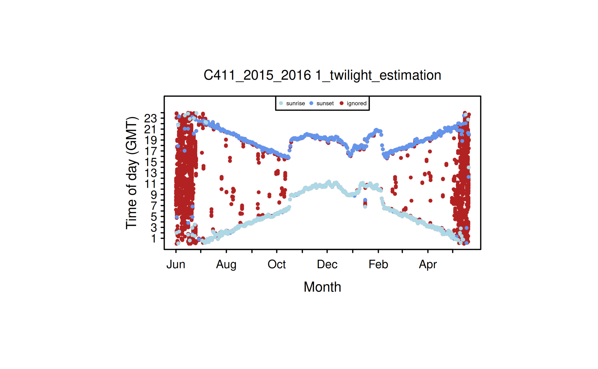
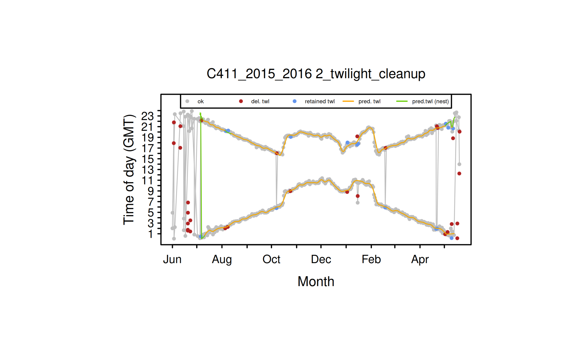
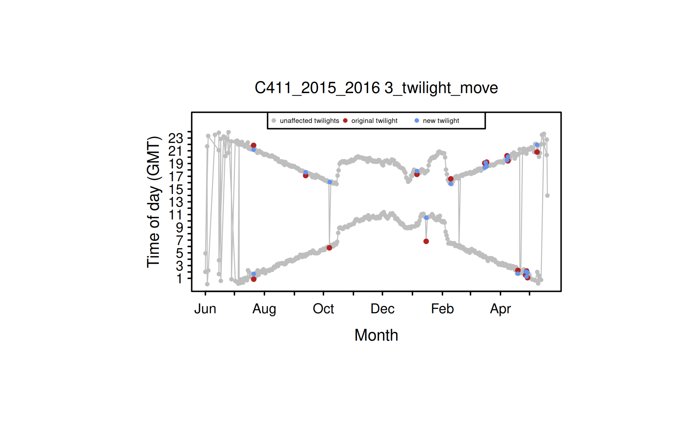
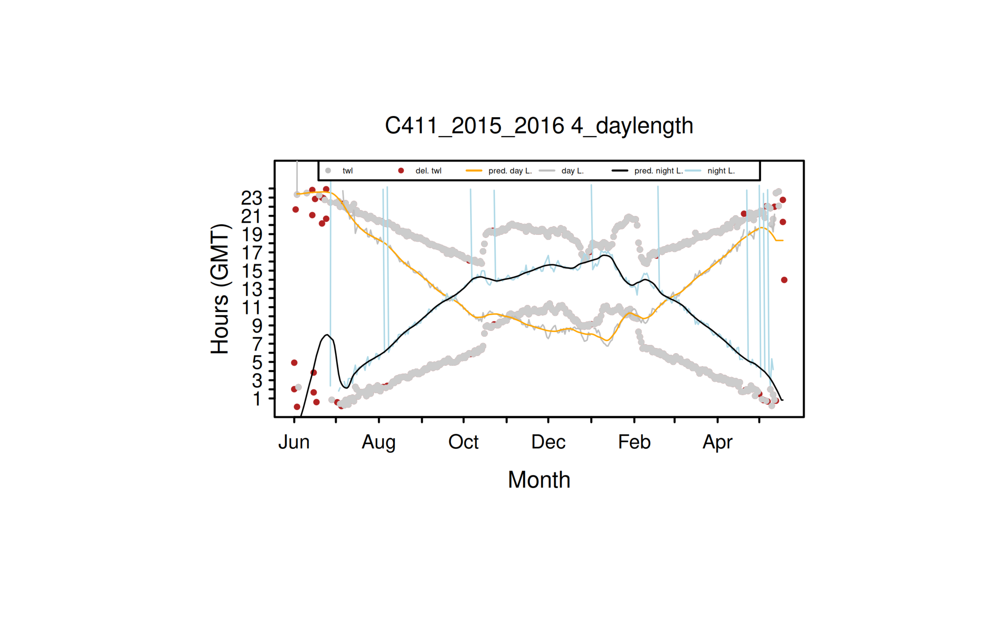
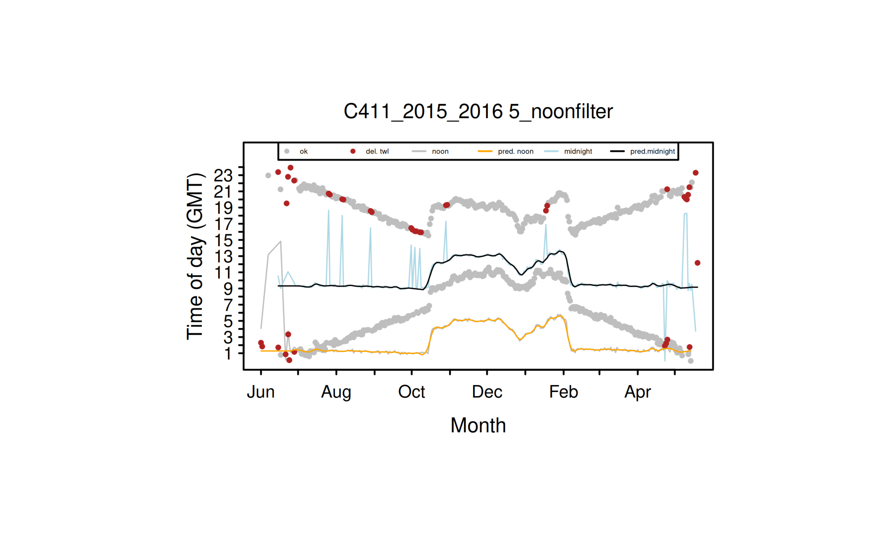
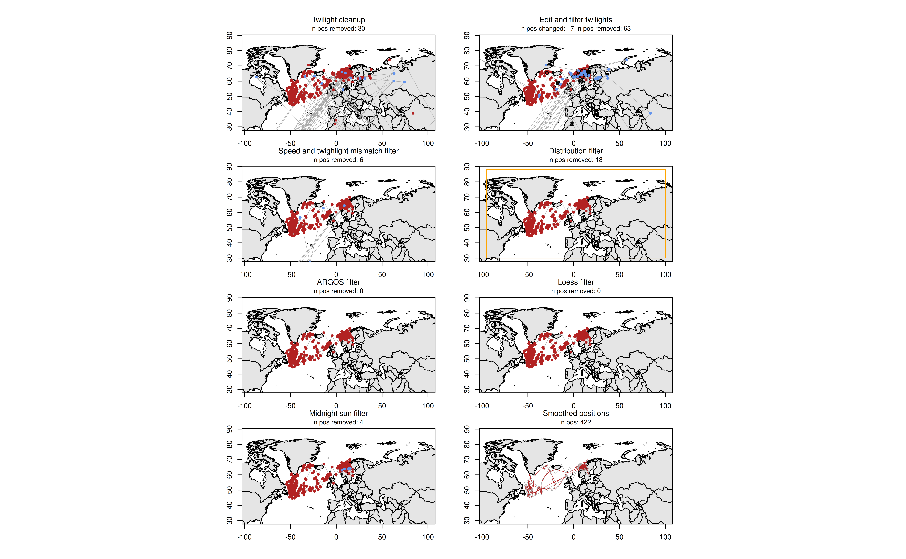
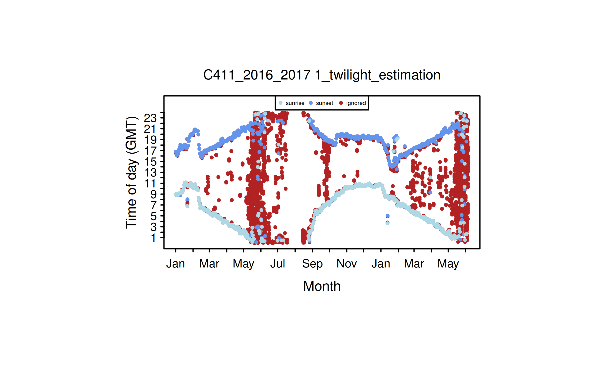
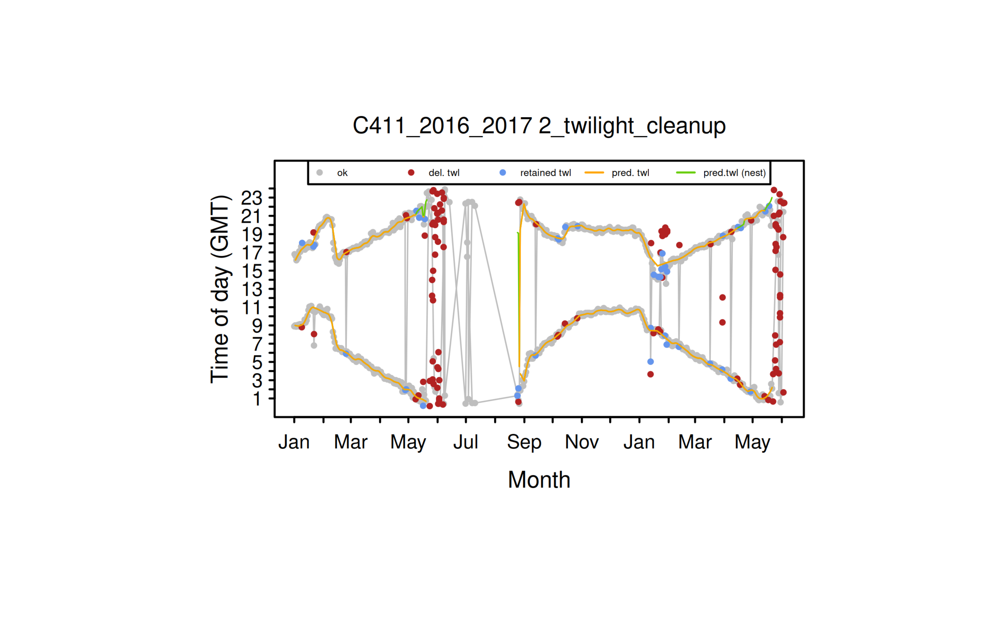

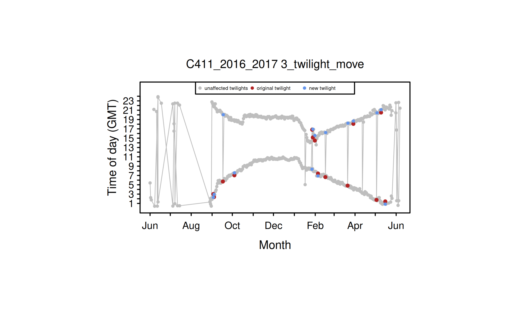
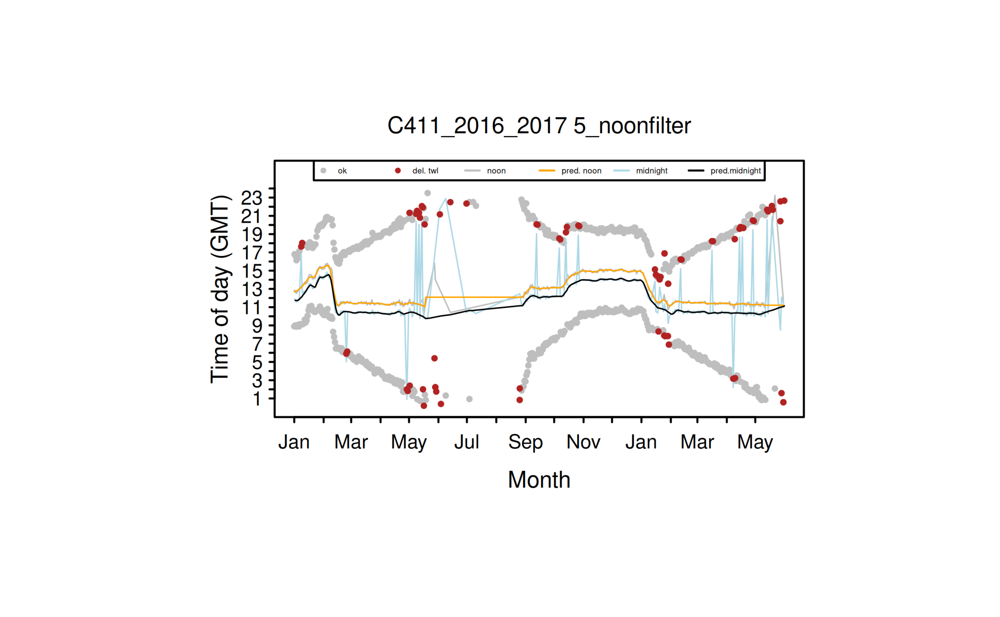
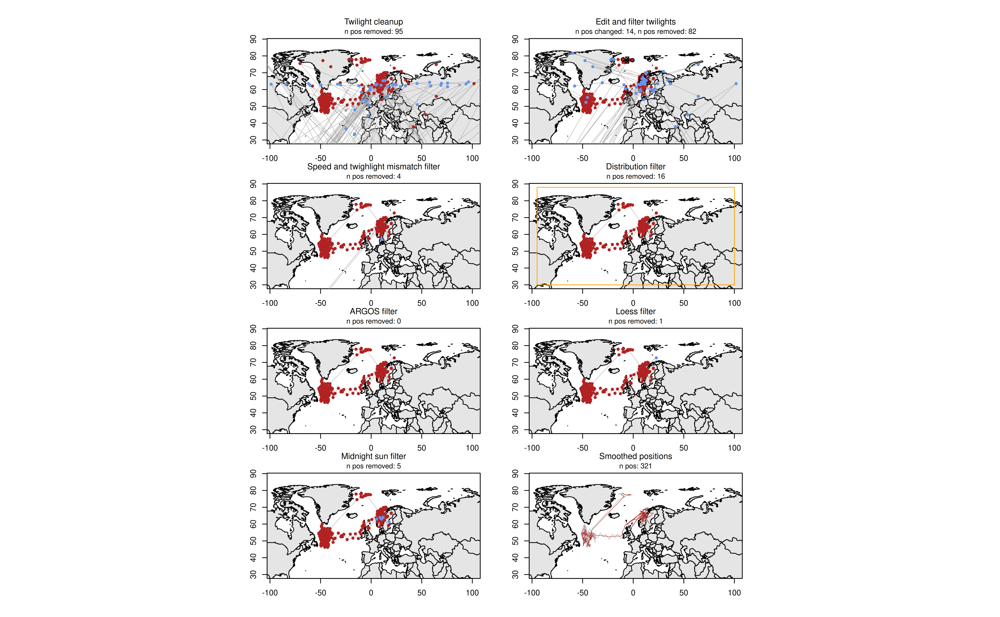